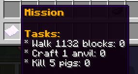
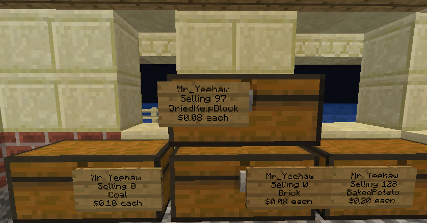
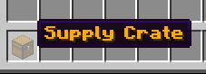
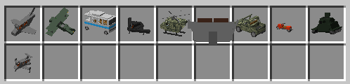

Introduction to Datearth
Datearth is a geopolitical Minecraft server with a real world map. Towns and nations strive for power and glory with diplomacy, military, and war. Start a town and recruit residents. Form a nation and make alliances. Gather resources and build your military to conquer the earth!
The World Map
The map is a replica of the real world earth generated from real world data. The cobblestone walls represent the country borders. The cobblestone on the ground represents population density, like a city. Deposits of minerals in the map are based on real data.
You can view a live map of the world where the currently online players and town regions around the world are shown at datearth.com/map.
Towns
You can form a town with $2000. Invite residents to expand and grow the town. A town must have enough money in its bank to pay the daily upkeep or the town will fall. The town upkeep increases with $5 for every claim the town has. Outsiders can't steal or attack residents in the towns claimed land. If the towns nation is at war then outsiders can attack residents in the towns claimed land and the town may be conquered by a nation.
Visit the wiki at datearth.com/wiki to view the town commands and learn more.
Nations
A nation is a collection of towns that have joined together. A nation has a capital which is the town that formed the nation. A nation can be formed with $10000. Being in a nation comes with benefits such as being able to teleport to each town in the nation, making trade and travel easier. However, towns in nations are forced into war if a nation declares war on another nation.
Visit the wiki at datearth.com/wiki to view the nation commands and learn more.
Wars
A nation can declare war on another nation in order to conquer its towns. When war is declared between two nations, protection from outsiders is removed from all towns in the nations at war. A nation can conquer towns from the other nation by killing the residents of the towns. All towns must be conquered before the capital of a nation can be conquered.
Visit the wiki at datearth.com/wiki to view the war commands and learn more.
Economy
Missions
Money can be earned by completing missions. You receive a mission by voting 5 times. When you complete a mission you will receive $500 in-game and a new mission to complete. Missions can be shared with town member or traded with outsiders.
Shops
Players can create chest shops to trade with other players. Join a town and a nation to teleport to trading hubs.
Supply Drops
A supply crate drops randomly every 10 minutes around the world. The crates contain money, items, ammuntions and weapons. You can right click a compass for direction to the nearest supply crate.
Armoury
Weapons
Shift to aim, left click to shoot and right click to reload.
You can find weapons in supply crates.
Vehicles
Purchase vehicles with /vehicles to unlock them.
When a vehicle is purchased, the purchaser keeps the vehicle forever even though it is destroyed. A vehicle can be returned to the garage with /callback and can be summoned with /garage.